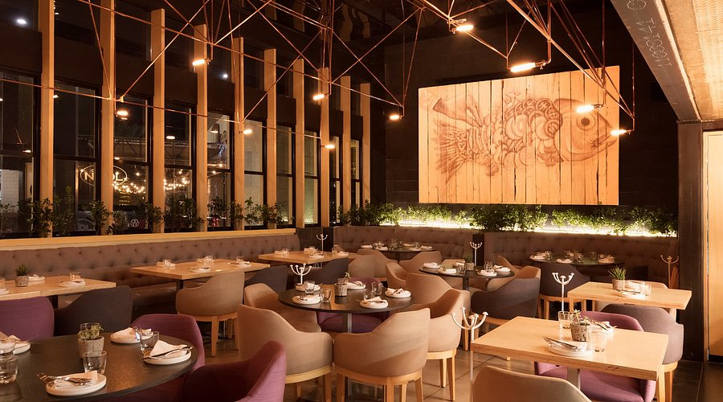

Nuestra Historia

Sabor porteño nació de un sueño familiar: compartir nuestra pasión por la buena comida, los ingredientes frescos, sus aromas y las increíbles recetas que pasan de generación en generación.
Desde nuestros comienzos, trabajamos con amor para ofrecer una experiencia única a nuestros clientes.
Quiénes Somos
Nuestros Fundadores
Marcos & Valentina
Marcos, nuestro chef, y Valentina, nuestra anfitriona, comenzaron este proyecto en el año 1995 con la misión de crear un lugar donde cada persona se sienta como en casa.
La dedicación y el amor que ellos tienen por la gastronomía son el corazón de nuestro restaurante.
Ingredientes frescos
Utilizamos solo los mejores ingredientes frescos, seleccionados cuidadosamente para garantizar la calidad y el sabor excepcional de cada plato.
Experiencia única
En Sabor Porteño, nos esforzamos por crear una experiencia única para cada cliente, combinando un ambiente acogedor con un servicio excepcional y una comida deliciosa.
Hecho casero y con amor
Cada plato que servimos es hecho con amor y pasión, siguiendo recetas tradicionales que han sido perfeccionadas a lo largo de los años para ofrecer el auténtico sabor porteño.